1. Zwald Travel Planner — l'étalon niveau à atteindre
zwaldtravelplanner.com et /services/. Même société. Le client juge STT par rapport à ce site. On reprend la famille (serif + sans, vert profond, photos droites, beaucoup d'air) ; STT s'en distingue par des tons sable chauds à la place de la menthe, et des cartes produit avec prix.
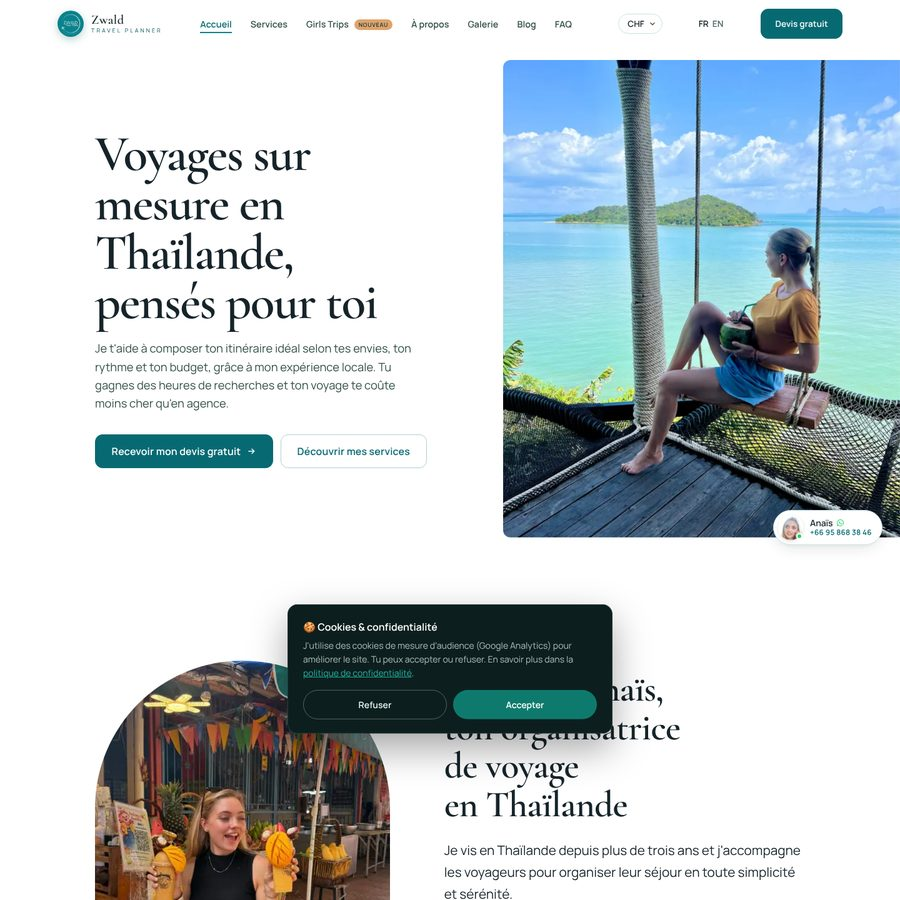
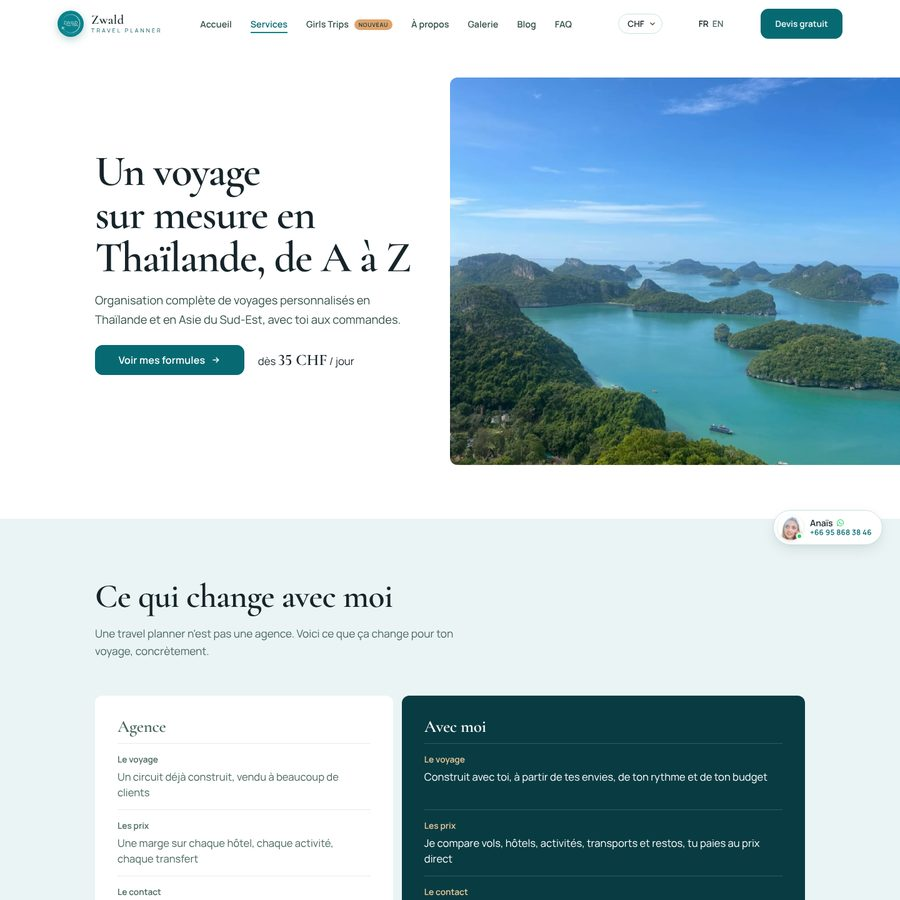
Hero
- Grille 2 colonnes : texte à gauche (≈ 52 %), photo à droite qui fuit jusqu'au bord droit de l'écran, coins gauches arrondis 12 px, hauteur ≈ 760 px. Rien n'est posé sur la photo.
- H1 Cormorant Garamond 600, ≈ 80 px, interligne 0.98, 3–4 lignes max, pas de surtitre.
- Texte d'intro Manrope 18 px gris-vert, 46 caractères par ligne max, puis boutons à 34 px sous le texte.
- Sur /services/ : bouton + « dès 35 CHF / jour » côte à côte. C'est le modèle pour « from 1,000 THB per adult » dans le hero de 4 Islands.
- Pastille WhatsApp flottante : fond blanc, photo ronde, prénom, numéro, point vert. Pas de gros bouton vert.
- Double bouton plein + contour (« Recevoir mon devis » / « Découvrir mes services ») : sur STT, un seul bouton plein + un lien texte souligné.
- Petite photo chevauchée avec bord blanc : signature ZTP, pas pour STT.
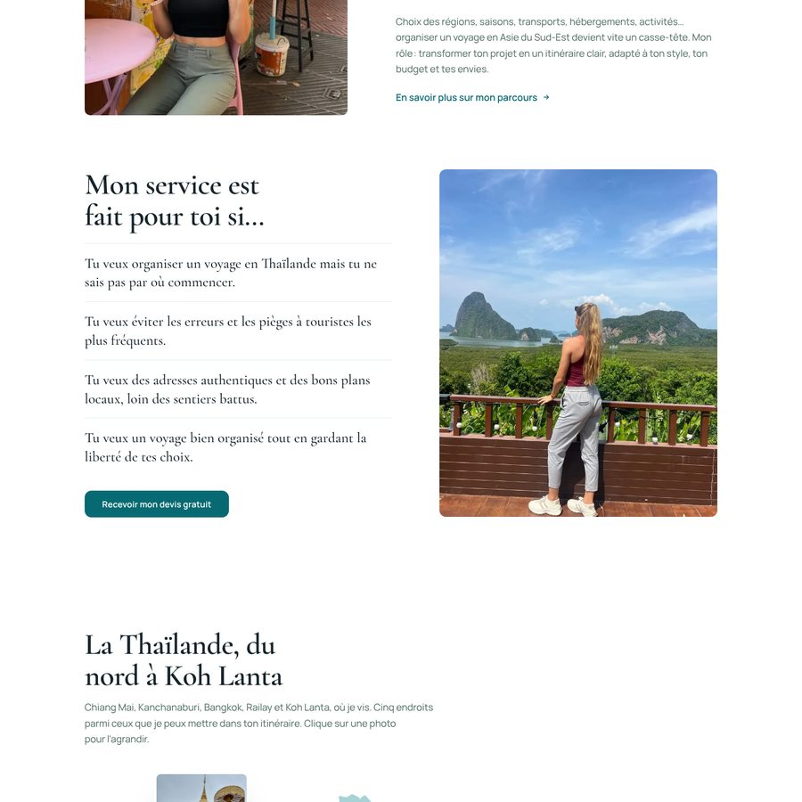
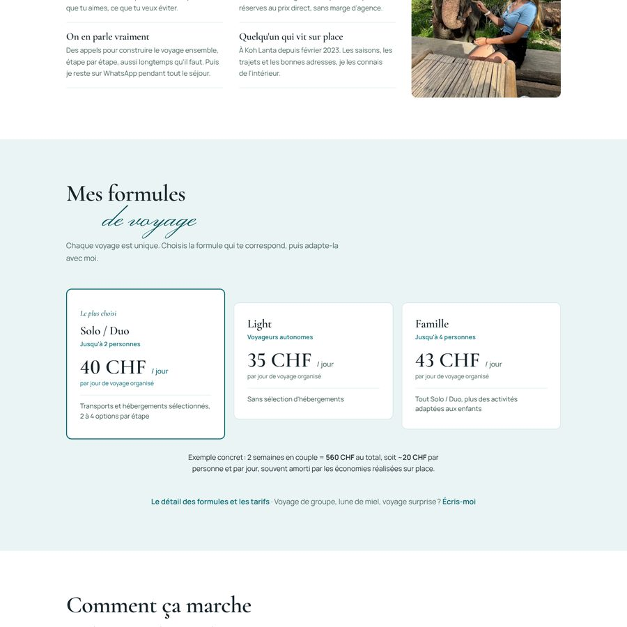
Sections de contenu
- Rythme : une section blanche, une section teintée, une section sombre, jamais deux teintées de suite. Respiration verticale 96 px.
- Listes à filets 1 px (pas de puces, pas d'icônes) : titre serif 23 px + une ligne grise. À reprendre pour « Included / Not included » et « Before you book ».
- Prix en Cormorant 600 ≈ 48 px, unité en Manrope 15 px à côté (« 40 CHF / jour »). Chiffres alignés (lining-nums).
- Carte mise en avant = bordure 2 px vert, pas d'ombre, pas de ruban.
- Le mot en italique script « de voyage » dans le titre : pas sur STT.
- Bande menthe #EAF4F5 : STT utilise du sable #F6EFE4 à la place.
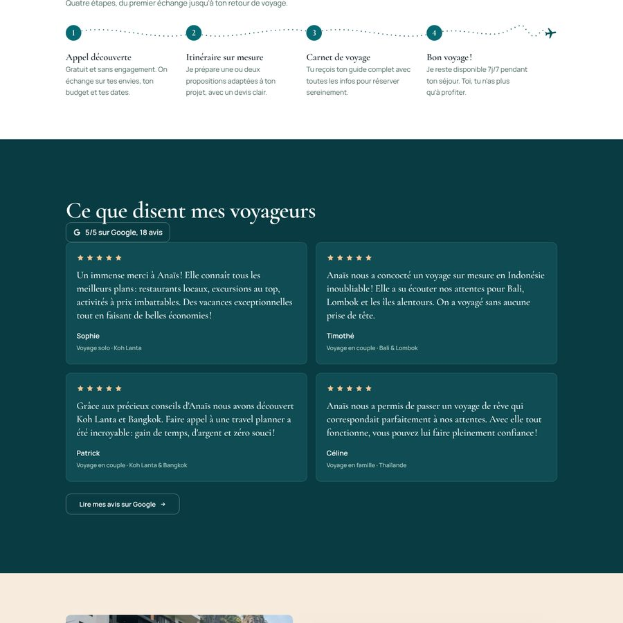
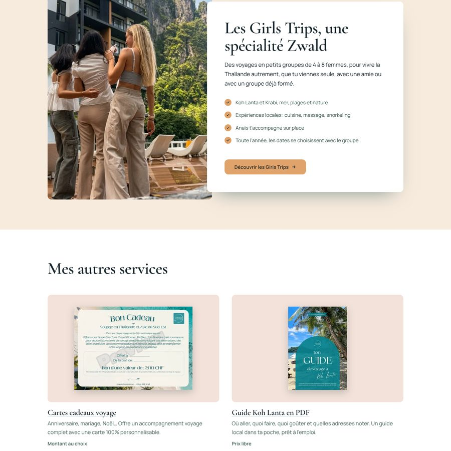
Sombre, sable, tuiles
- Section sombre : fond #083C42, cartes #0F4C53 bordure 1 px rgba(255,255,255,.08), citation en serif 24–30 px, prénom en Manrope 600, contexte en 14 px. Étoiles sable, discrètes. Bouton contour blanc.
- Composition « photo 4:3 + panneau blanc qui chevauche de 24 px » sur fond beige #F5E9DC : modèle pour la section Transferts de l'accueil STT.
- Tuiles : photo 16:10 coins 12 px, titre serif souligné 1 px sous la photo, une ligne grise, ligne de prix en 600. Aucun bouton dans la tuile.
- Étapes : numéro dans un rond 34 px, titre serif 23 px, texte gris. Trois ou quatre étapes maximum, seulement si chaque étape est un fait.
- Le petit avion et la ligne pointillée : pas d'ornement sur STT.
- Avis : seulement s'ils sont fournis et réels. Sinon la section n'existe pas.
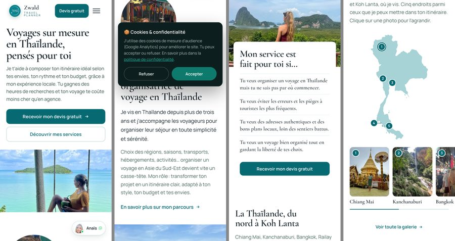
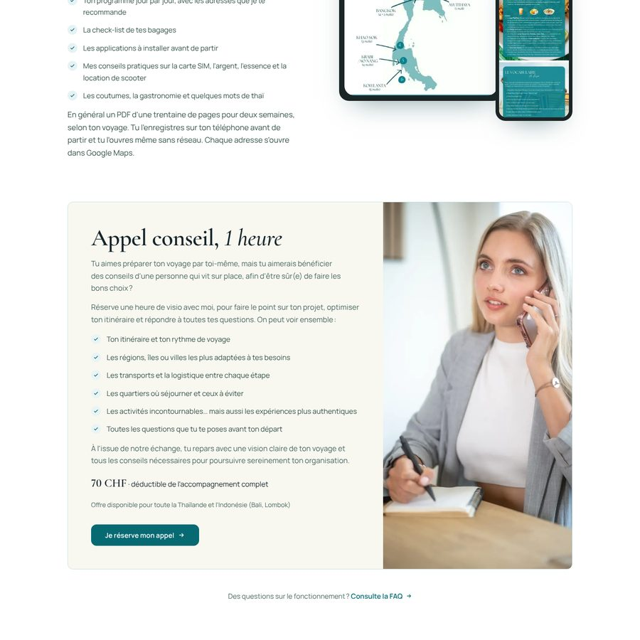
Mobile et encart
- Mobile : H1 ≈ 44 px, texte, boutons pleine largeur 52 px de haut, puis la photo en bandeau 16:9 pleine largeur sans marge. Le hero tient dans un écran.
- Marges latérales 22 px, titres de section ≈ 36 px, listes à filets conservées telles quelles.
- Encart texte + photo dans une carte 12 px (photo collée au bord droit de la carte, sans marge intérieure) : modèle pour « Longtail or speedboat? » et pour la fiche « Your drivers ».
- Rail horizontal de vignettes (galerie) : interdit sur STT, grille uniquement.
2. ADN ZTP chiffré (extrait du CSS en ligne, 3 nov. 2026)
Sources : /css/site.css, /css/system.css (« Système Carnet de lagune, validé le 31.10.2026 »), /css/home.css. Les jetons de system.css écrasent ceux de site.css : ce sont les valeurs réellement affichées.
| Élément | Valeur mesurée |
|---|---|
| Polices | Cormorant Garamond 600 (titres) + 500 italique (rare) ; Manrope 400 et 600. 4 fichiers woff2 au total, auto-hébergés, latin + latin-ext. |
| Corps | Manrope 17 px / 1.65, couleur #16242A, font-variant-numeric: lining-nums partout. |
| H1 | clamp(2.75rem, 11vw, 5.6rem) → 44 px mobile, 89 px max desktop ; interligne 0.98 ; espacement -0.025em ; max 14ch. |
| H2 | clamp(2.1rem, 4vw, 3.35rem) → 34–54 px ; interligne 1.04 ; -0.015em. |
| H3 | clamp(1.4rem, 2.2vw, 1.85rem) → 22–30 px. |
| Lead | clamp(1.1rem, 1.6vw, 1.3rem), 1.7, couleur ink-soft, max 46ch. |
| Surtitre (eyebrow) | Supprimé par règle client. Quand il reste, italique serif 18 px, sans capitales, sans filet. |
| Conteneur | 1200 px, gouttière 32 px (22 px sous 560 px). |
| Section | padding vertical clamp(80px, 6.7vw, 96px) desktop ; clamp(44px, 9vw, 80px) mobile. |
| Grille | gap 28 px ; 2, 3 ou 4 colonnes. |
| Rayon | Un seul : 12 px (photos, cartes, encarts). Boutons 14 px. |
| Ombre | Une seule, réservée à la photo chevauchée : 0 28px 60px -32px rgba(8,60,66,.55). Les cartes n'ont pas d'ombre au repos. |
| Bouton | padding 16 × 30 px, Manrope 600 15 px, min-height 48 px (54 px dans le hero), rayon 14 px, flèche → qui glisse de 4 px au survol. Variante contour 1 px #CBE1E3. |
| Nav | 76 px de haut, logo à gauche, liens Manrope 15 px avec soulignement animé, bouton plein à droite. |
| Hero desktop | grid 1.08fr / 0.92fr, gap clamp(48px, 6vw, 96px), photo hauteur clamp(560px, 100svh - 136px, 800px), déborde à droite jusqu'au bord de l'écran, rayon 12 px côté gauche, object-position 60% 50%. |
| Hero mobile | texte puis photo 16:9 pleine largeur (marges négatives), boutons 52 px pleine largeur. |
| Tuile photo | 16:10, rayon 12, zoom 1.04 en 0.6 s au survol ; titre serif souligné 1 px (couleur ligne, teal au survol). |
| Section avis | fond #083C42, citation serif 500 clamp(1.55rem, 2.6vw, 2.3rem) / 1.28, max 30ch. |
| Bande CTA | 2 colonnes 50/50, min-height 560 px, photo pleine hauteur, panneau texte max 680 px sur fond beige, H2 clamp(2.3rem, 4vw, 3.6rem). |
| Footer | fond #083C42, 4 colonnes 1.6fr 1fr 1fr 1.2fr, padding 84 px / 32 px, titres de colonnes Manrope 700 12.5 px espacés 0.2em. |
| Règles client écrites dans le CSS | « pas de texte posé sur une photo, pas de voile sombre ; pas de surtitre ; pas de pastilles, pas de légende sur les vignettes, pas de cartes à icône ; un seul rayon, une seule ombre. » |
3. Sawday's — la carte photo-d'abord sawdays.co.uk
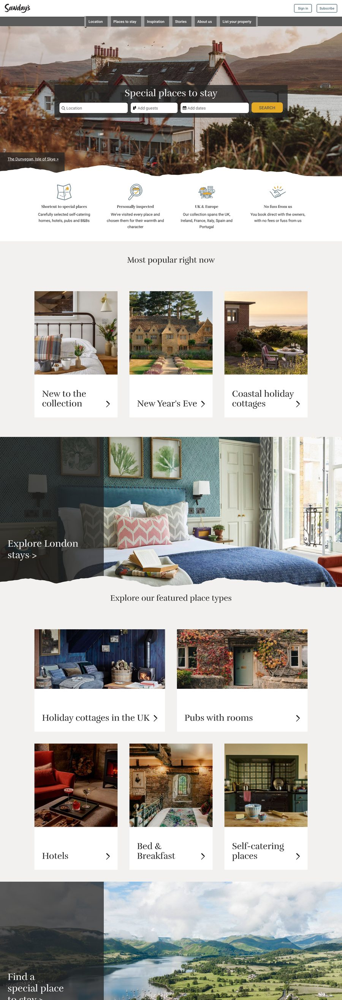
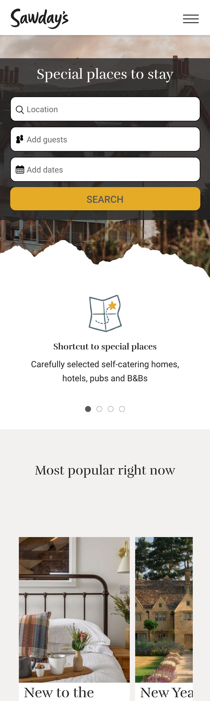
Ce qu'on reprend
- La carte : photo 4:3 droite, puis un bloc blanc avec titre serif 26–28 px et un chevron. Rien d'écrit sur la photo. Toute la carte est le lien.
- Grille 3 colonnes à 1440 px, 1 colonne pleine largeur sur mobile, gouttières 24 px. Les photos font le travail, la typo est calme.
- Alternance de sections : grille blanche, puis une grande photo bord à bord, puis grille sur fond crème.
Ce qu'on ne reprend pas
- Les bords déchirés des photos (effet papier) : ornement.
- Le texte « Explore London stays » posé sur une photo.
- Les 4 icônes dessinées sous le hero.
4. Simba Sea Trips — les faits d'une excursion simbaseatrips.com
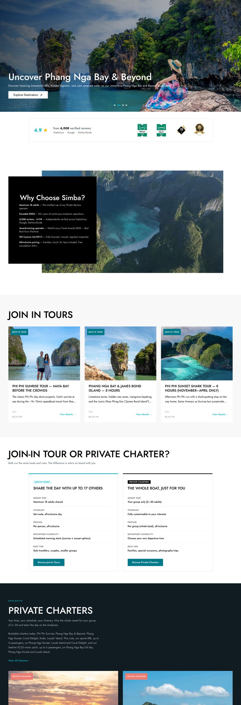
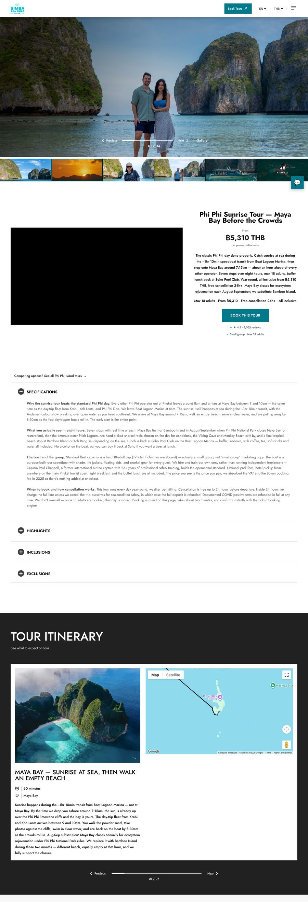
Ce qu'on reprend
- Le comparatif Join-in / Private en deux colonnes à lignes : Group size · Itinerary · Pricing · Departure · Best for. À transposer en « Longtail or speedboat? » (4 Islands) et « Join-in or private ».
- L'encart de faits (max 18 adults, founded 2005, TAT licence n°) : une liste de faits vérifiables, pas de promesses. Sur STT, seulement les faits connus (adresse, WhatsApp, prix affichés) + licence et horaires si fournis.
- Carte produit avec « From ฿5,310 THB » en bas à gauche.
- Compteur de galerie « 01 / 24 » et flèches Previous / Next textuelles.
Ce qu'on ne reprend pas
- Titres en capitales (JOIN IN TOURS, PRIVATE CHARTERS), étiquettes colorées sur les photos, encart noir posé sur la photo.
- Carrousel plein écran en hero et sections très denses.
- « View Details → » sur chaque carte : la carte entière est le lien.
5. Tao Philippines — l'humain sans mise en scène taophilippines.com
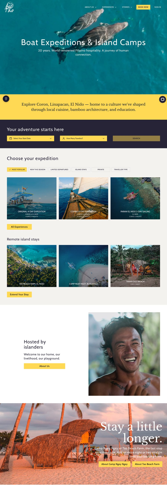
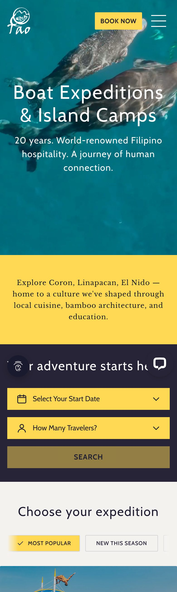
Ce qu'on reprend
- La section « Hosted by islanders » : texte court à gauche (titre 2 lignes, 2 phrases, un bouton), portrait documentaire 4:5 à droite, lumière naturelle, personne qui rit, pas de pose. Modèle pour « Who runs this trip » / « Your drivers » quand les vraies photos arriveront. En attendant : pas de portrait placeholder, section sans photo.
- Ton : « Welcome to our home, our livelihood, our playground. » Une phrase, pas trois promesses.
Ce qu'on ne reprend pas
- Titres blancs posés sur les photos des cartes, bandeau jaune, boutons jaunes.
- Hero plein écran avec texte centré sur la photo.
6. Audley Travel — la retenue audleytravel.com
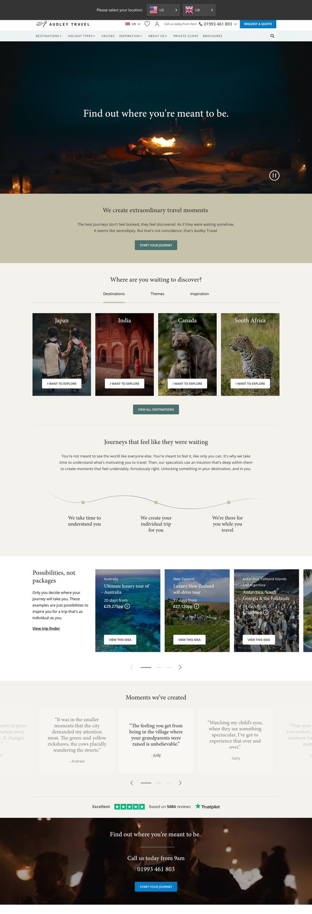
Ce qu'on reprend
- La bande sable sous le hero (#C9BFA6 chez eux) avec un titre serif et deux lignes : une respiration teintée, sans photo, sans icône. STT : bande sable #F6EFE4 avec les faits du comptoir (adresse, WhatsApp).
- Cartes d'idées de voyage avec « 20 days from £29,275pp » : la durée et le prix sur une même ligne, petit, mais présent.
- Ligne Trustpilot sobre : logo + « Excellent » + « Based on 5084 reviews ». Si STT a une note Google, c'est ce format : une ligne, pas une section.
Ce qu'on ne reprend pas
- Titres blancs sur les photos de destinations, boutons « I want to explore » posés sur l'image.
- Frise décorative ondulée à trois points.
- Carrousels d'avis.
7. Flash Pack — la carte compacte avec prix flashpack.com
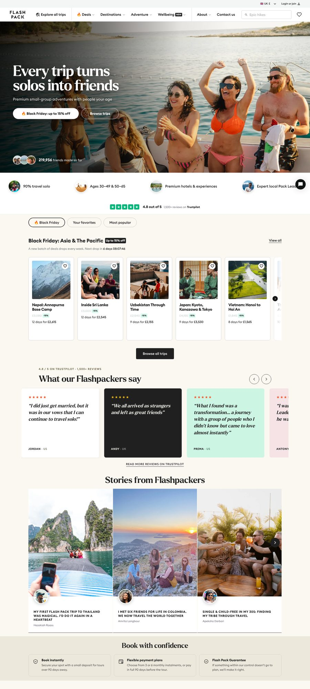
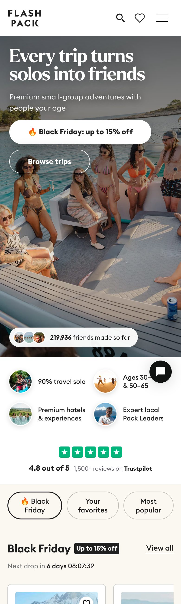
Ce qu'on reprend
- Carte compacte : photo, titre Manrope 600 18 px, ligne « 9 days for £2,155 ». La structure photo → titre → une ligne de faits → prix, sans bouton, est exactement celle de la carte STT (en serif pour le titre).
- La bande de 4 faits sous le hero (« 90 % travel solo », « Ages 30–49 ») : des chiffres, pas des adjectifs. STT ne l'affiche que si les faits existent.
Ce qu'on ne reprend pas
- Rail horizontal de cartes avec flèche (carrousel) : grille sur STT.
- Avis dans des cartes de couleurs différentes (noir, menthe, rose) : une seule couleur de carte sur STT.
- Texte sur la photo du hero, badge « -15 % », émoji 🔥 dans le menu.
8. Contre-exemples (ce que STT ne doit pas devenir)
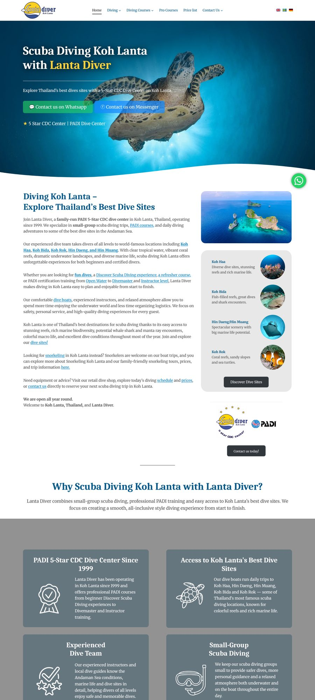
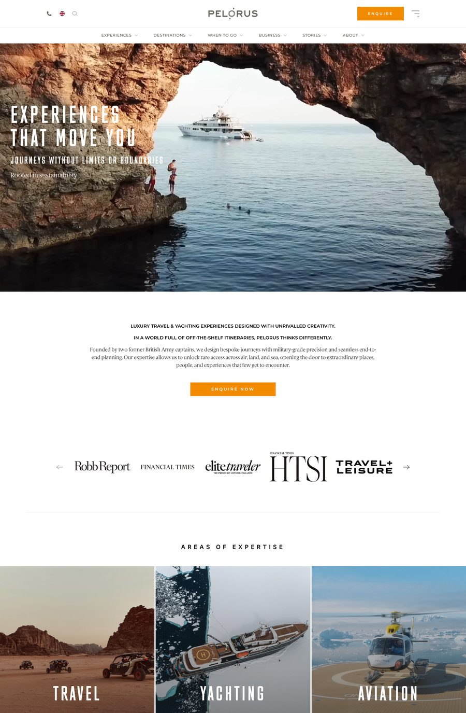
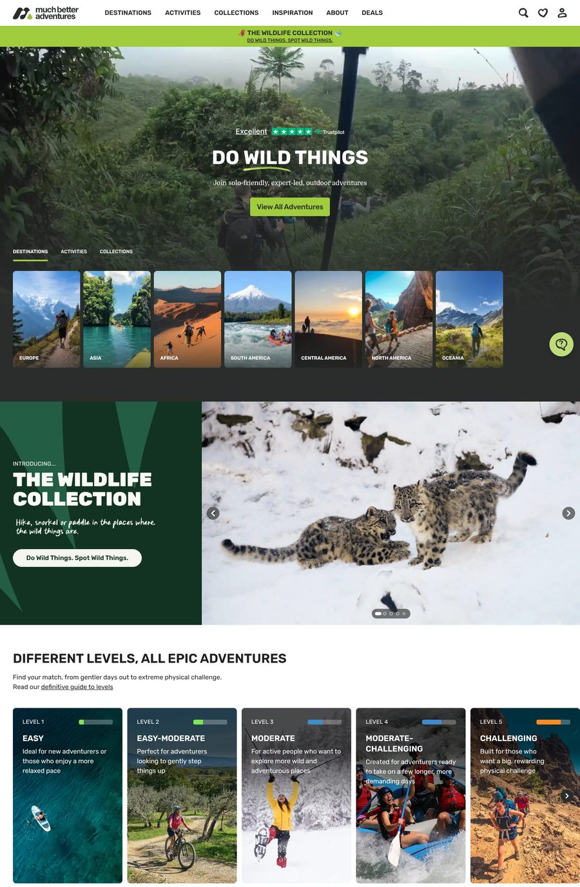
- Lanta Diver : hero bleu dégradé avec vague découpée, titre en deux couleurs, 4 cartes grises à icônes « Why Scuba Diving with… », texte justifié et suroptimisé, bouton WhatsApp vert fluo. C'est l'image du « petit site local » dont STT doit se démarquer.
- Pelorus : titres condensés en capitales posés sur les photos, voile sombre. Interdit (même famille que la v1 rejetée).
- Much Better Adventures : marketplace, cartes avec badges, barres de niveau, carrousels partout, titres gras condensés. Un tableau de bord, pas une agence.
9. Les deux versions rejetées et le site actuel
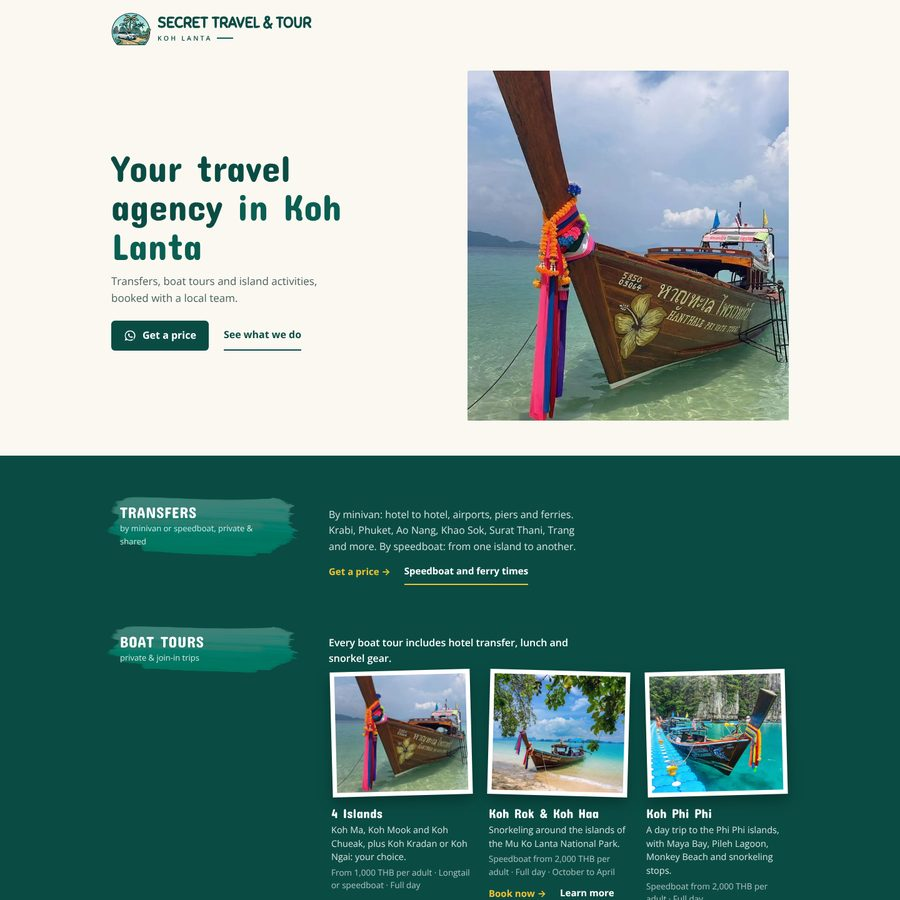
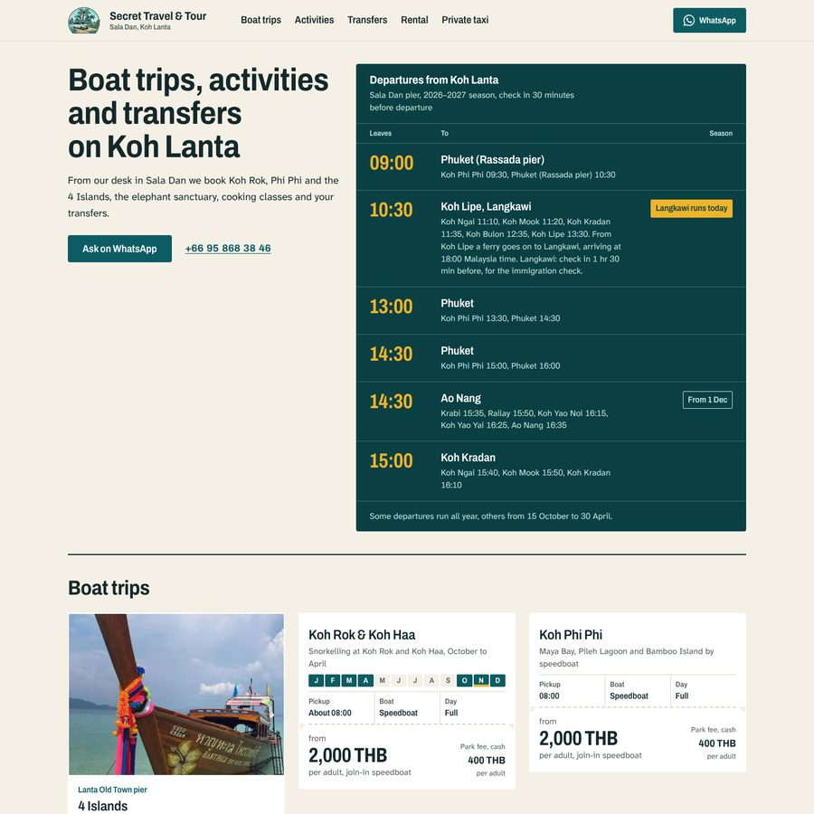
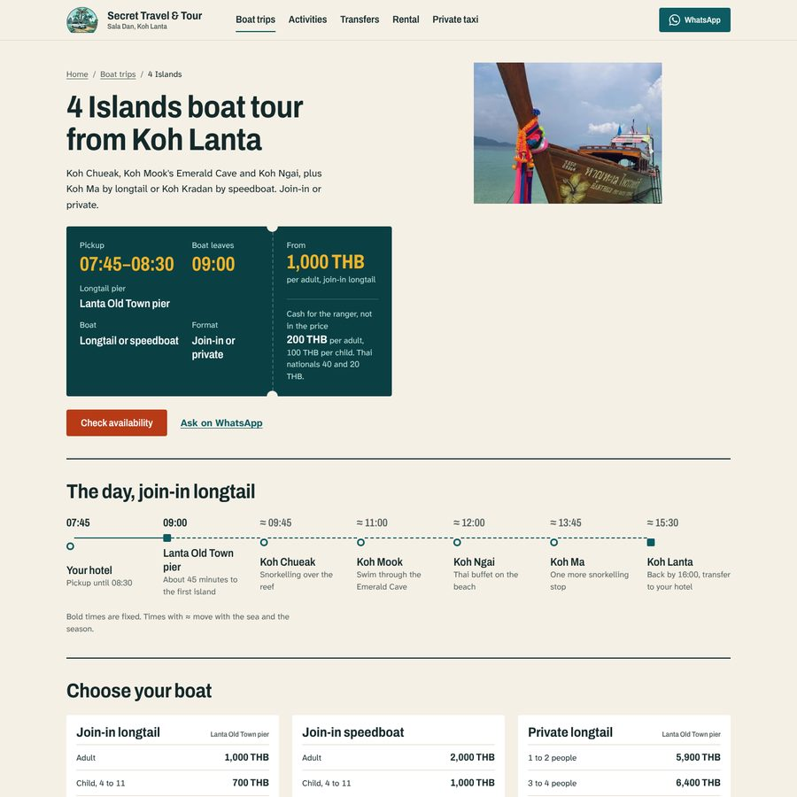
Pourquoi c'est raté, en une ligne
- v0 (site actuel) : coups de pinceau derrière les titres, polaroïds inclinés, police arrondie, double CTA « Book now / Learn more » : un gabarit Canva.
- v1 : Archivo condensé gras, panneau vert foncé avec heures jaunes, cartes découpées en cases « Pickup / Boat / Day » : le client a vu « un tableau de bord d'administration ». La densité de données a remplacé la photo.
Leçon v1 : les faits ne doivent pas être mis en scène (tableau, panneau, voyants) ; ils doivent être posés calmement sous une grande photo, en texte.
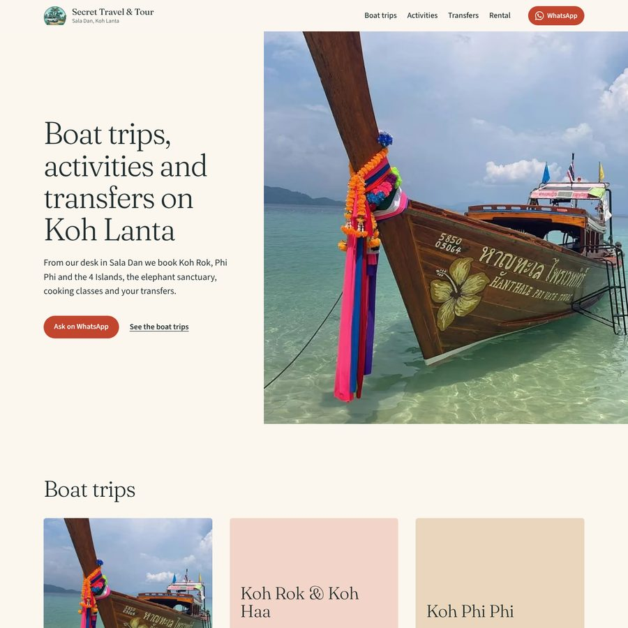
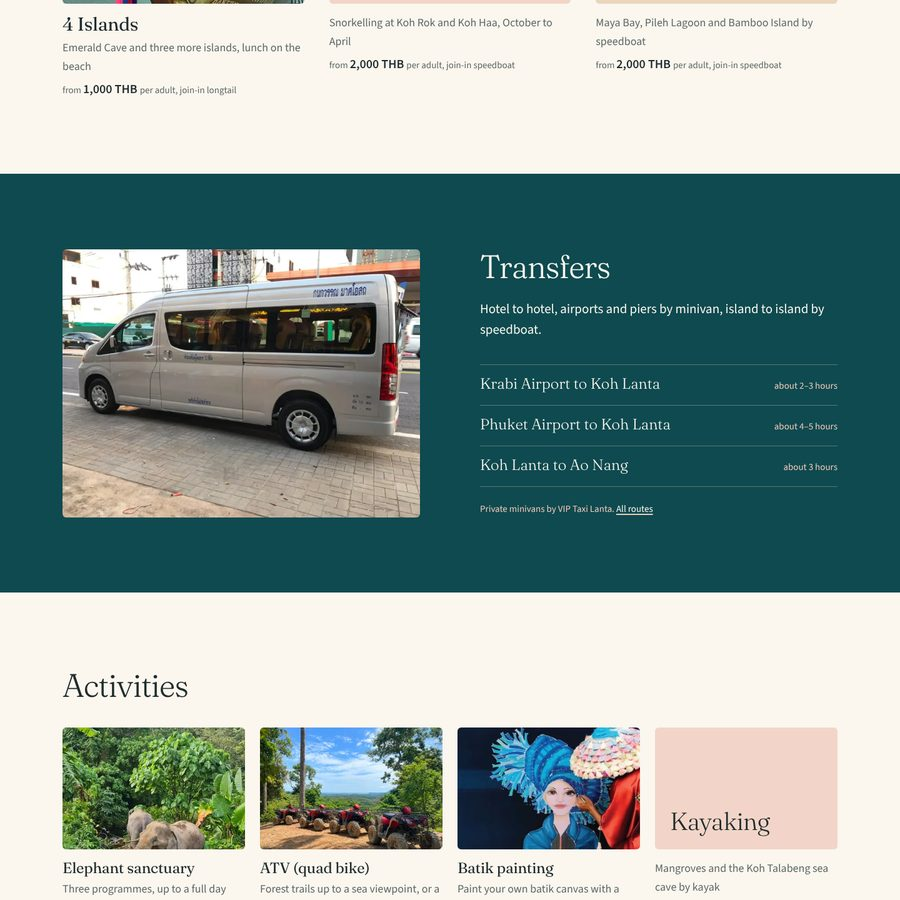
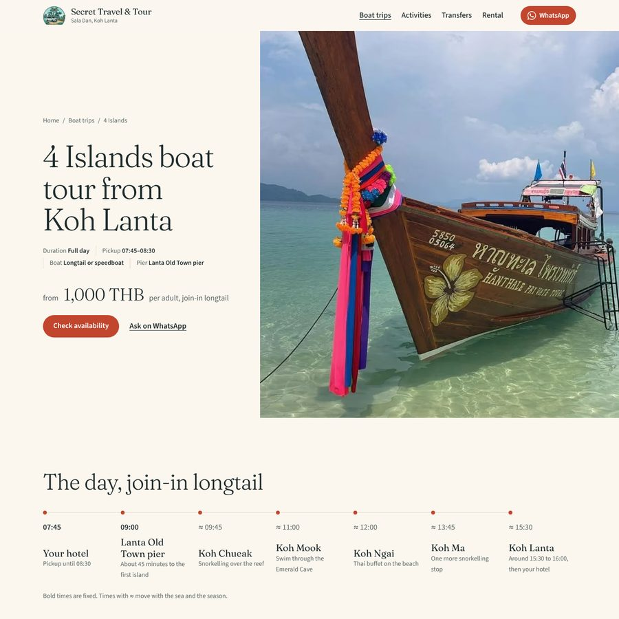
- v2 : rouge brique partout (boutons, points de timeline), blocs de couleur vides avec un titre dedans à la place des photos manquantes (rose, beige), serif Source Serif plus lourde que Cormorant, hero correct mais le reste de la page s'écroule dès qu'il n'y a plus de photo. Le client : « les couleurs ne sont pas bien et je n'aime pas comment le site est construit, franchement ce n'est pas beau ».
- La même photo de longtail sert au hero de l'accueil, à la carte 4 Islands, au hero de 4 Islands et à la carte mobile : une image par usage, jamais réutilisée.
- Timeline horizontale 7 colonnes avec points rouges : illisible, à refaire en liste verticale à filets.
Leçon v2 : une section sans photo ne doit pas exister. D'où la règle des placeholders obligatoires pour chaque produit et chaque section, et l'interdiction des aplats de couleur avec un titre dedans.
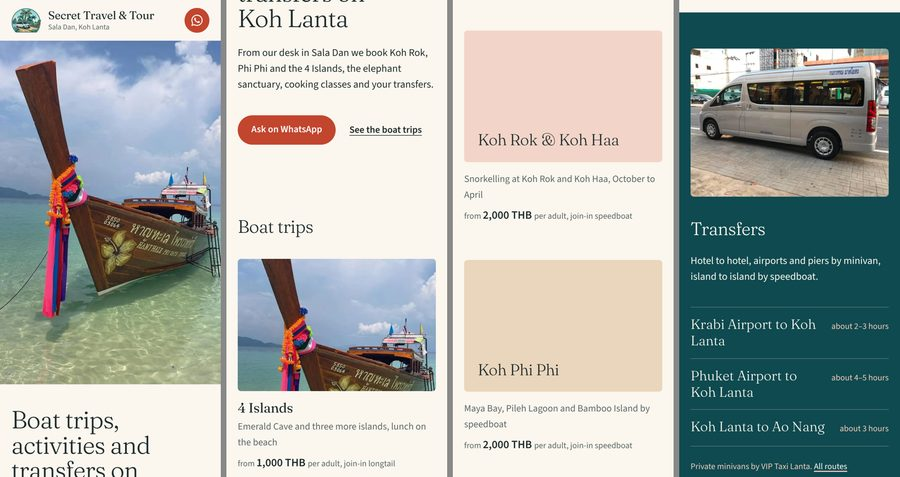